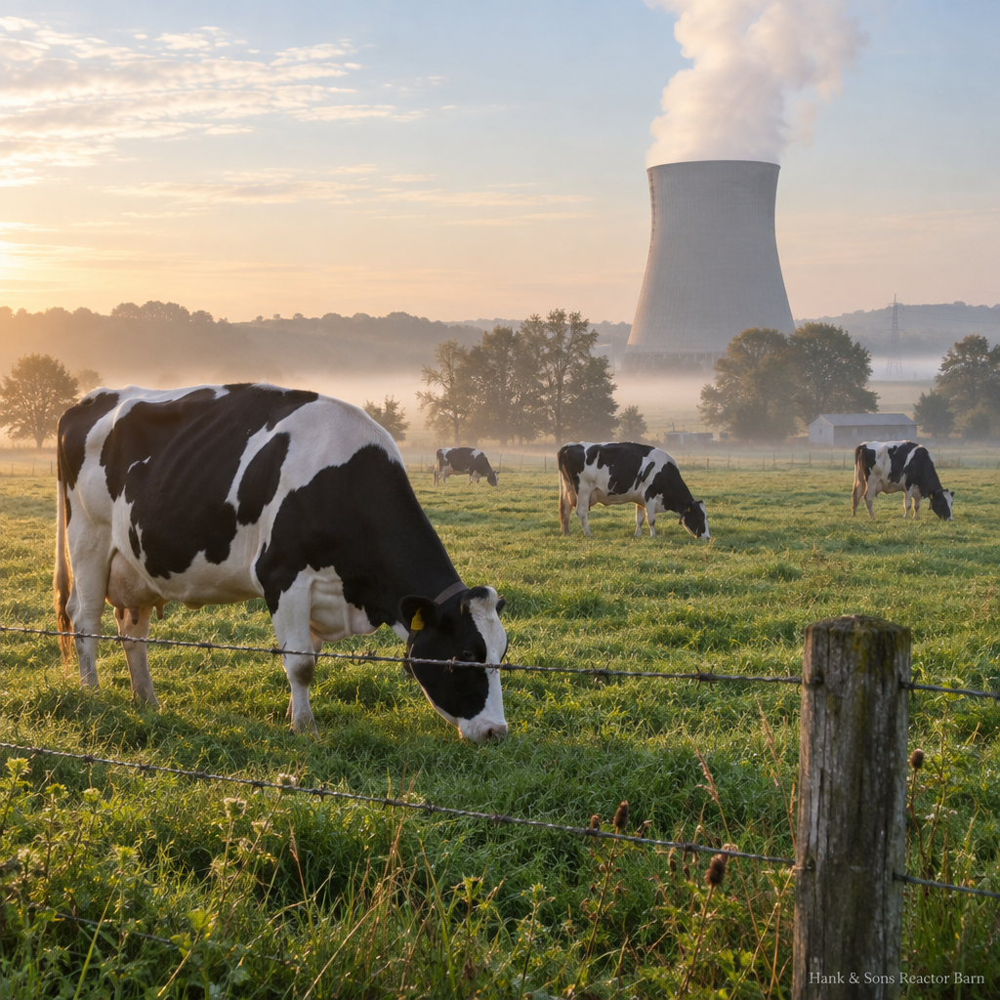
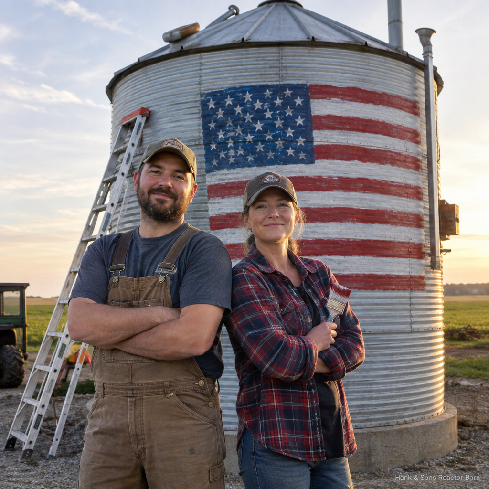
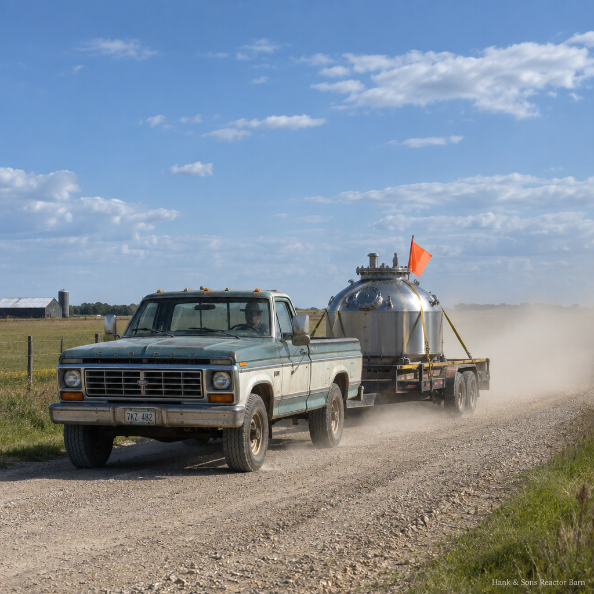
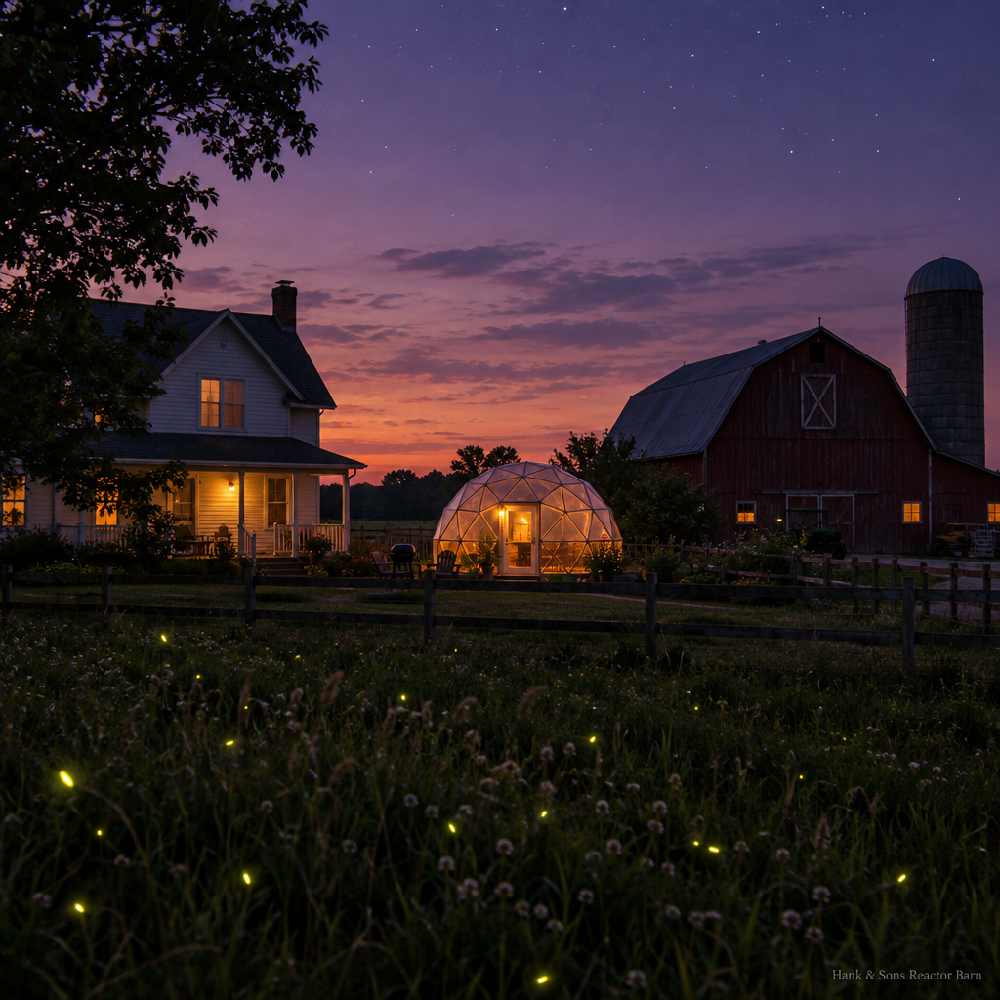
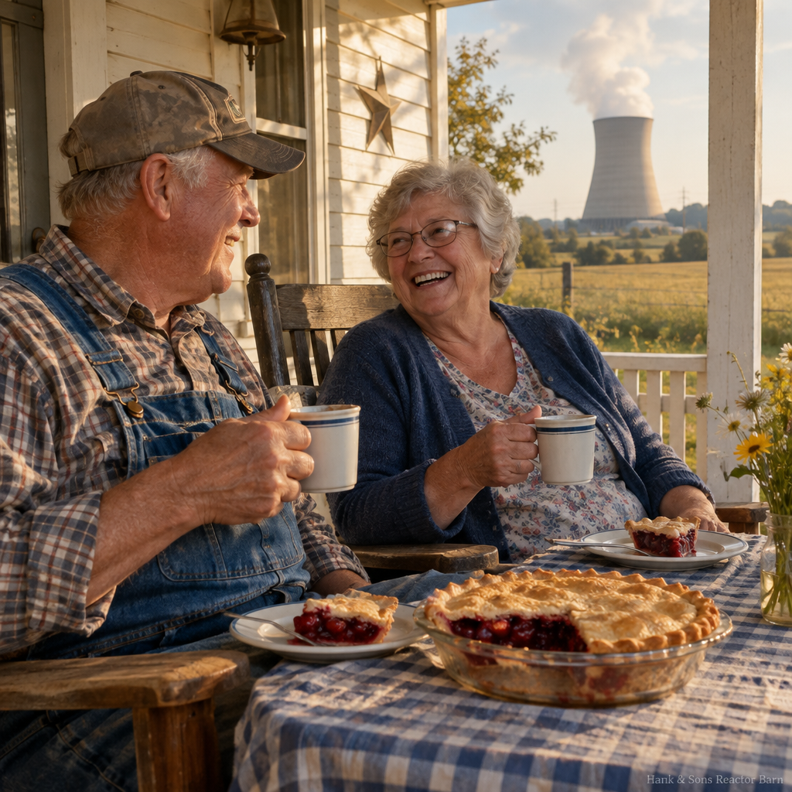
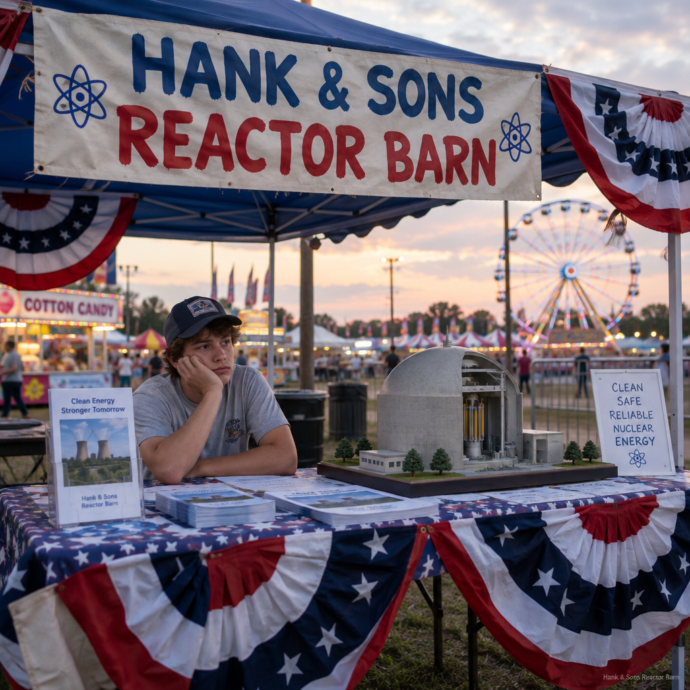

There's a corkboard by the register where customers pin photos of their units. Hank Jr. scanned it for the website, one photo at a time, on the scanner at the library. These are real pins from real customers, in the sense that everything here is equally real.






Got a unit and a camera? Mail prints to the shop, attention Hank Jr. He'll pin the good ones and mail the blurry ones back with notes.
Hank Jr. wrote it on the notepad by the register, which is our order system. Denise will call you about delivery and the paperwork. There is a surprising amount of paperwork.